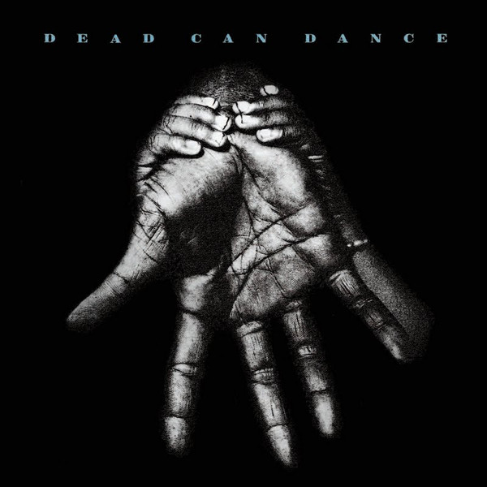

CD
Into The Labyrinth
Dead Can Dance
Media: Very Good Plus (VG+) · Sleeve: Very Good Plus (VG+)
—
Personal
Discogs Suggested—
Discogs Median—
Discogs High—
- Physical Copy ID
- BB-CD-0943
- Year
- 1993
- Label
- 4AD
- Catalog #
- 9 45384-2
- Country
- —
- Genre / Style
- —